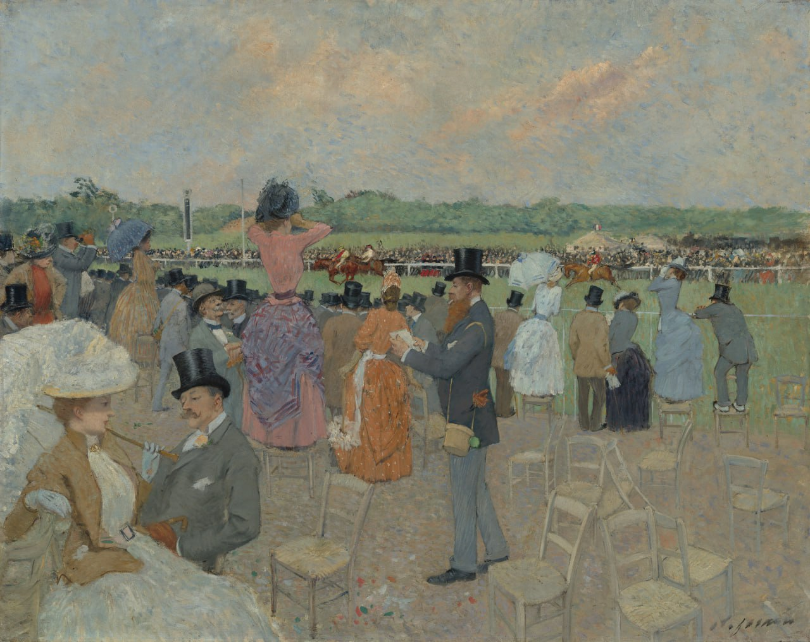

Жан Луи Форен
Aux Courses à Longchamp (На скачках в Лоншане), 1891

Холст, масло, 73,66 x 92,71 см
Национальная галерея искусства, Вашингтон.
Tchoukin, 1900
Источник: https://www.nga.gov/artworks/164921-races-longchamp

Холст, масло, 73,66 x 92,71 см
Национальная галерея искусства, Вашингтон.
Tchoukin, 1900
Источник: https://www.nga.gov/artworks/164921-races-longchamp